{kind=link}
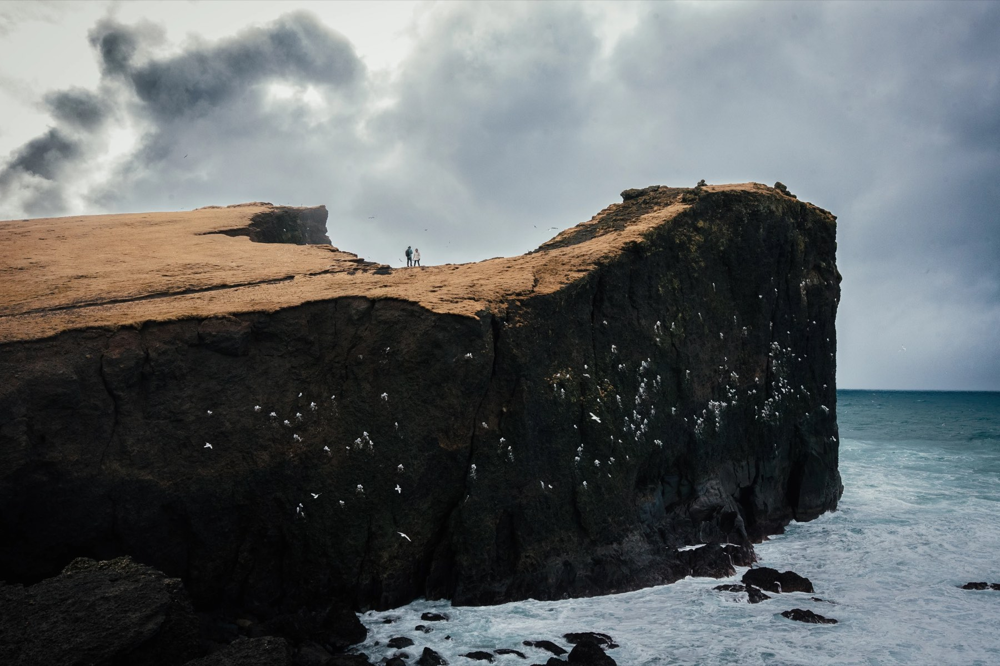
Je suis parti en Islande pour être impressionné.
J’avais des images en tête, et l’envie de me retrouver devant quelque chose qui me dépasse. Je voulais ressentir cette puissance et réussir à en garder une trace.
À Valahnúkamöl, les vagues se fracassaient contre la roche et les oiseaux traversaient la falaise par centaines. C’est l’endroit qui m’a le plus bouleversé pendant ce voyage. Des mois après, je me souviens encore des sons.
Sur place, j’avais envie de tout regarder. Et de faire des photos à la hauteur de ce que je ressentais.
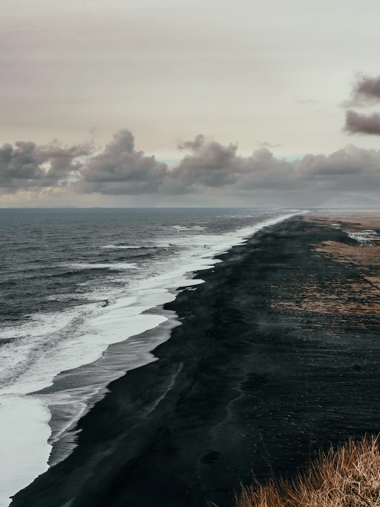
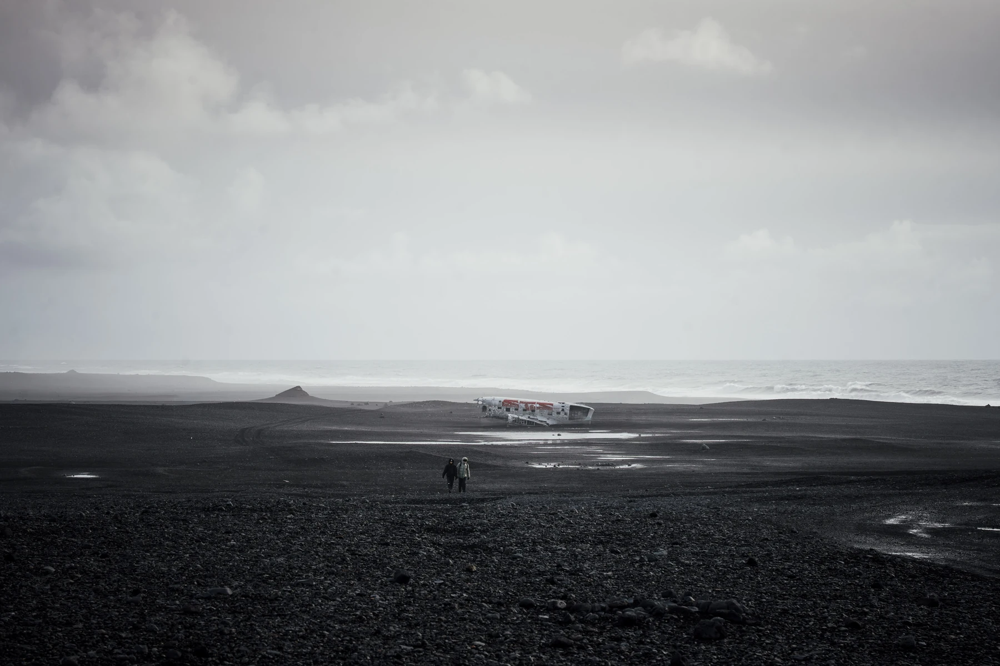
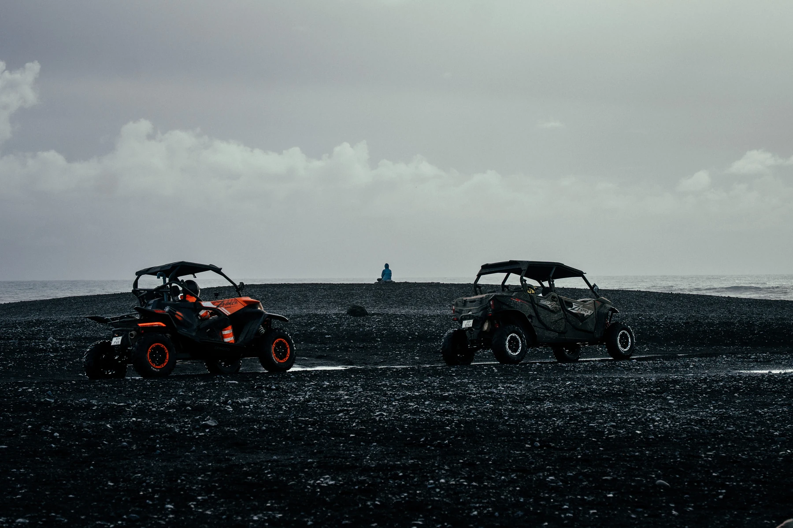
Je photographie les autres touristes, mais j’en suis un aussi.
Les autres voyageurs font partie du paysage. Parfois leur présence l’enrichit, parfois elle l’interrompt. Je suis venu, moi aussi, avec mon appareil et l’envie d’en rapporter une image extraordinaire.
Attendre l’image.
Ou la provoquer.
Je savais ce que j’étais venu voir : les geysers, l’une des images que j’avais en tête avant de partir en Islande.
À mon arrivée, une première chose m’a frappé. Depuis le début du voyage, c’était la première fois que le parking d’un site touristique était aussi bondé. Probablement le plus grand que j’aie vu de tout le voyage d’ailleurs.
{kind=link}
J’ai démarré ma visite en photographiant les petites sources, puis je me suis approché du geyser principal. Une foule l’entourait déjà. Les téléphones étaient levés, en mode vidéo. Certains filmaient pendant plusieurs minutes en attendant que la source jaillisse.
{kind=link}
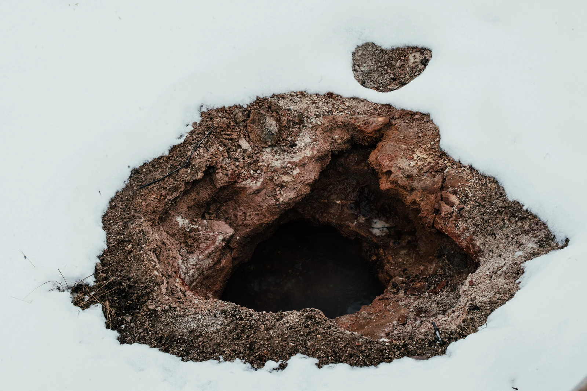
{kind=link}
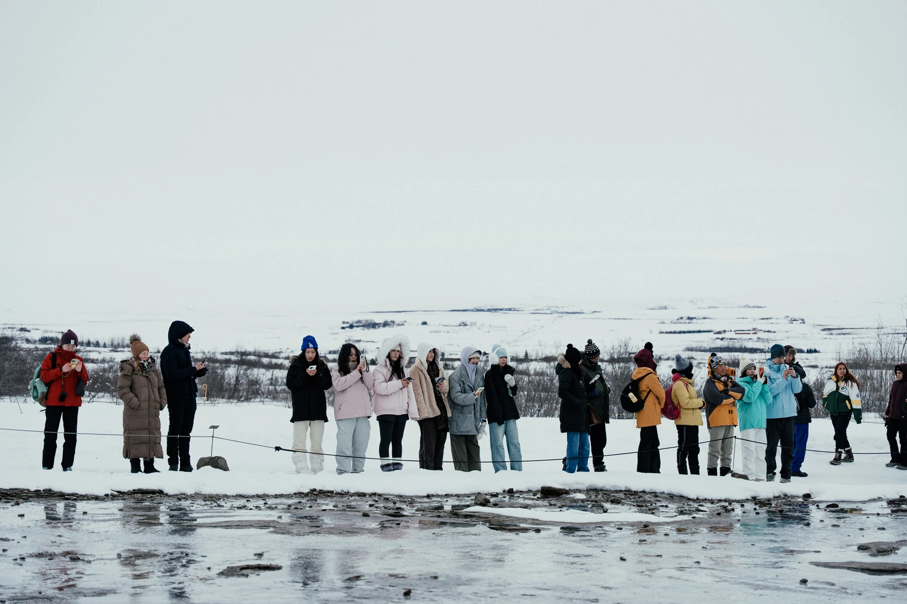
{kind=link}
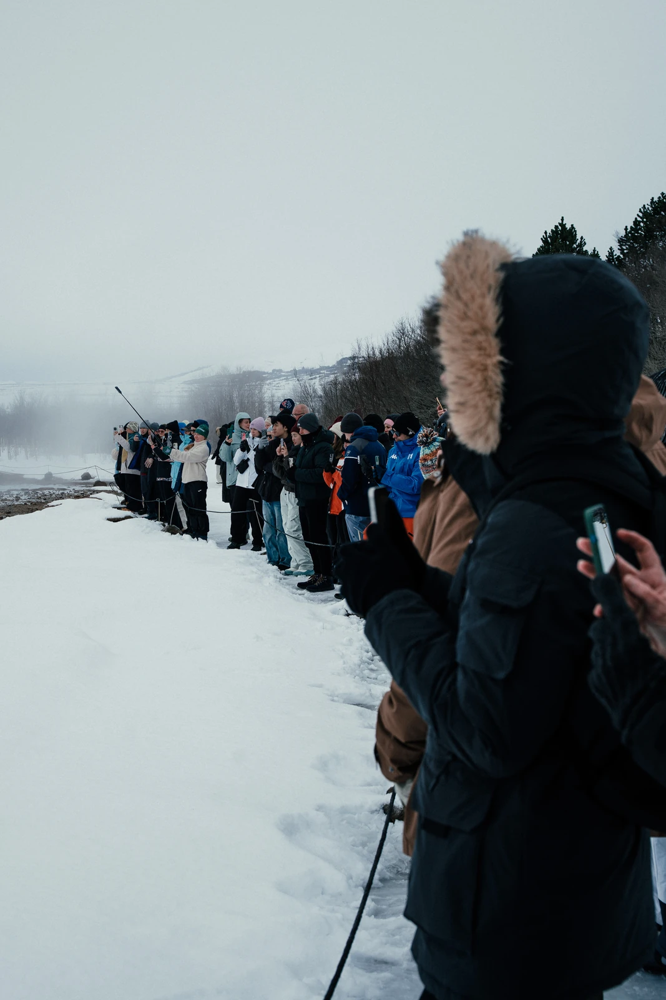
Mon premier réflexe a été de photographier les gens.
Après chaque éruption, une partie de la foule s’en allait et une autre prenait sa place. Et ça recommençait. Je savais ce qui allait se passer. Et j’avais déjà en tête la photo à prendre.
Il fallait attendre le jet, le prendre au plus haut.
J’étais frustré de faire partie de ce truc. Produire une image parce que tout le monde le fait. Mais j’étais là, moi aussi, avec mon appareil. Comme ces gens, j’avais pris l’avion, loué une voiture, et j’étais venu en Islande pour ressentir des émotions fortes. D’une certaine façon, je recherchais du spectaculaire.
J’ai attendu deux éruptions, peut-être. J’ai photographié le jet au plus haut. Serré parmi les autres, je n’arrivais pas à trouver mon cadrage. J’avais la désagréable impression de refaire une image déjà vue partout. Avant même de regarder mes photos, je préférais déjà celles que j’avais prises des gens autour.
Alors, je me suis éloigné. J’ai continué le chemin et pris un peu de hauteur pour regarder le site et les paysages.
{kind=link}
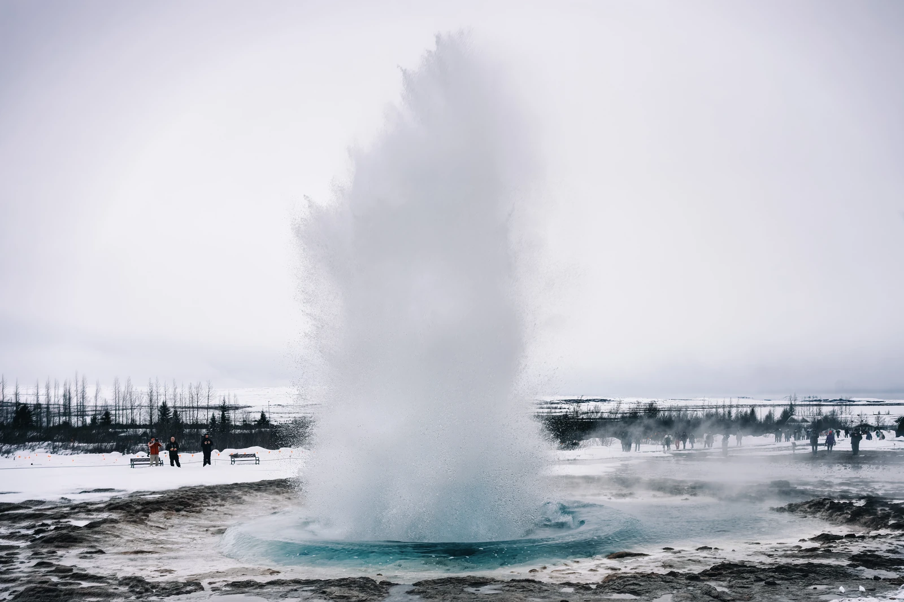
En redescendant, je me suis demandé pourquoi je m’obstinais à photographier le geyser. La vapeur, elle, transformait les gens qui la traversaient, presque comme un voile.
Alors je trouve un angle. L’odeur d’œuf est très forte. La brume passe devant les gens, les cache, puis laisse réapparaître une silhouette.
{kind=link}
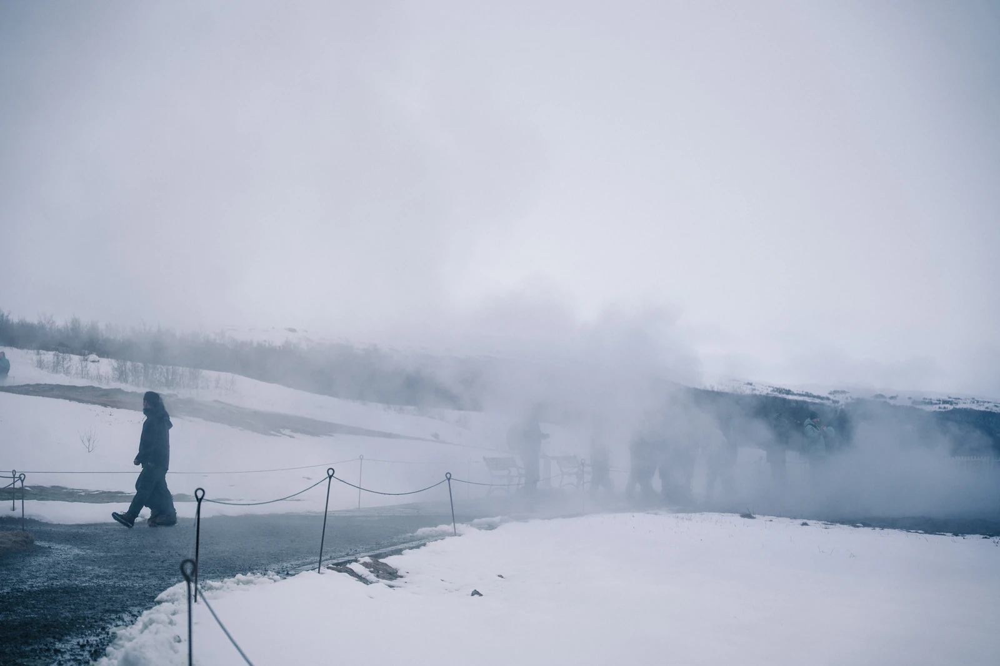
Je commence à les photographier lorsqu’ils la traversent. Il y a quelque chose de fantomatique dans ces corps à moitié effacés. Le même lieu, les mêmes visiteurs, mais une atmosphère très loin de celle que j’avais ressentie devant le jet.
Je reste une bonne heure. Je prends du plaisir.
{kind=link}
{kind=link}
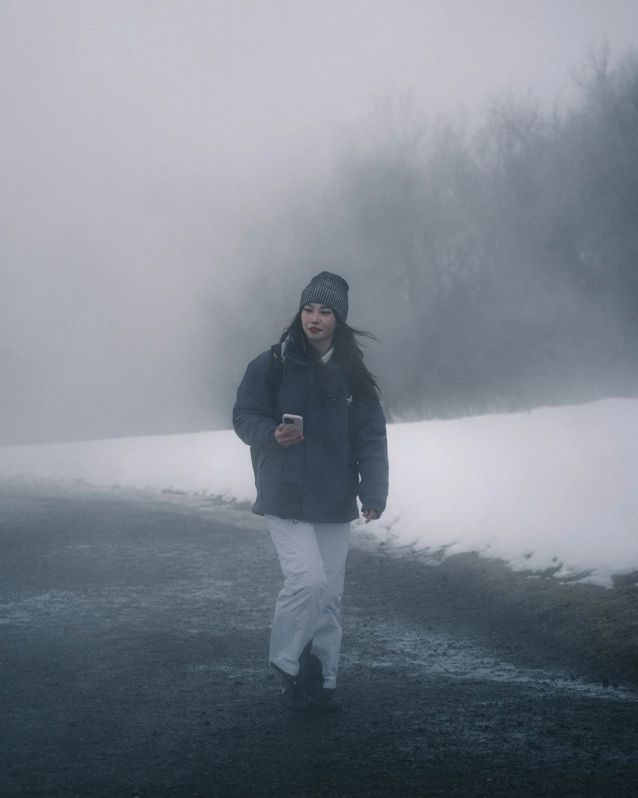
Je ne sais pas si ces images sont plus originales. D’autres ont sûrement photographié cette vapeur avant moi. Mais je me sens à ma place. J’ai envie de rester, de chercher, de faire des photos.
J’étais venu photographier le geyser.
J’ai trouvé ma propre manière de photographier Geysir.
{kind=link}
Geysir, mars 2026.
{kind=link}
{kind=link}
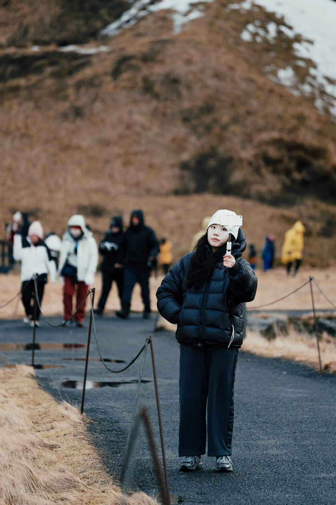
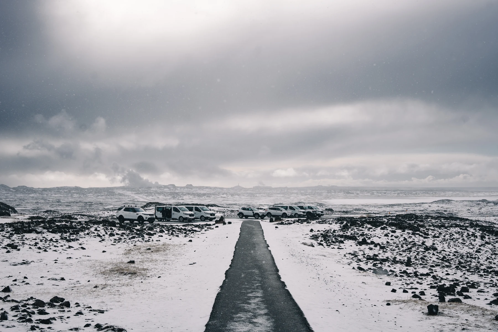
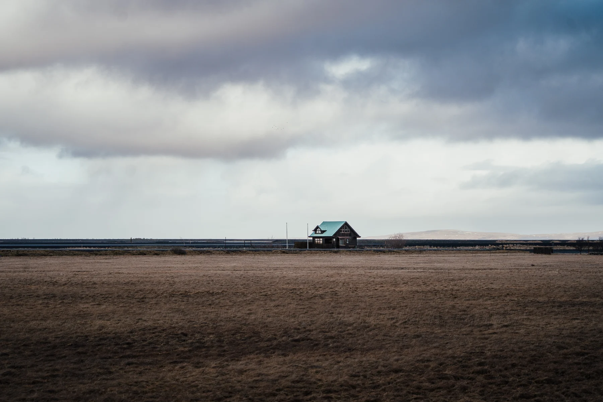
Une nuit
à Grindavík.
Ma toute première nuit en Islande, j’ai choisi de la passer dans un endroit particulier : Grindavík, évacuée en novembre 2023, quand la terre s’est mise à s’ouvrir sous les rues.
{kind=link}
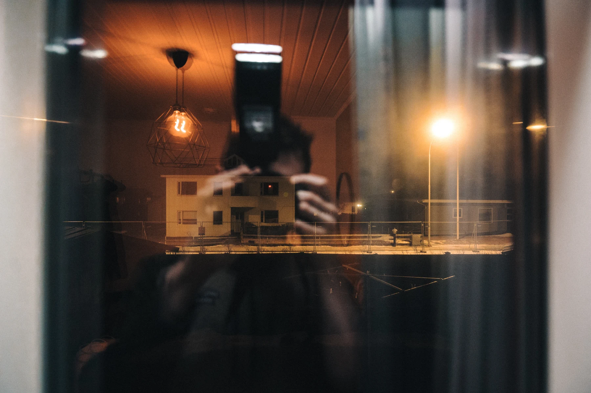
À peine mes affaires posées, je n’avais qu’une envie : parcourir la ville armé de mon flash et découvrir ce qu’elle cache.
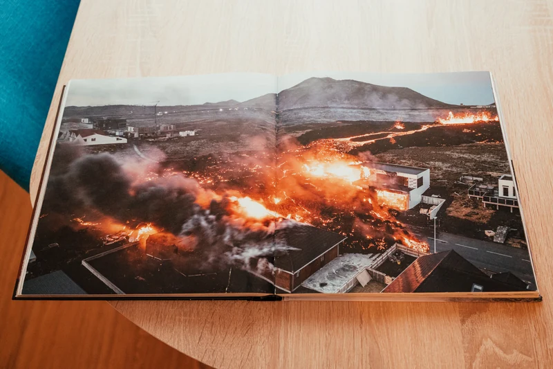
À la nuit tombée, appareil au cou, prêt à partir, j’ai remarqué un livre de photographies posé sur la table du salon. L’hôte, un géant islandais à la barbe grise, m’a vu le feuilleter et s’est approché.
Page après page, il m’a parlé de l’évacuation, des habitants attachés à leurs maisons, du rachat des propriétés proposé par l’État. Beaucoup ont accepté de vendre. Lui a choisi de rester, malgré les risques. Une nouvelle éruption pouvait arriver, disait-il, sans qu’on sache quand.
Je regardais les photographies, happé par leur beauté et par la violence de ce qu’elles montraient.
Puis je suis sorti.
Le temps est glacial. La neige s’est arrêtée, mais le froid me gèle les mains. Dans la nuit noire, les rafales de vent ressemblent à des cris, au loin.
{kind=link}
Une station-service éclairée est mon premier refuge. Les traces humaines sont encore là, les pompes, le menu du grill accroché à la porte, mais l’intérieur est vide. Chose rare dans une ville, un peu plus loin, un panneau indique emergency exit.
{kind=link}
Sous un pont, un passage lumineux m’attire. Je le photographie, puis je continue mon chemin, vers un quartier d’habitations. Beaucoup de maisons semblent vides. Derrière certaines fenêtres, je distingue encore des meubles, des objets, des jouets...
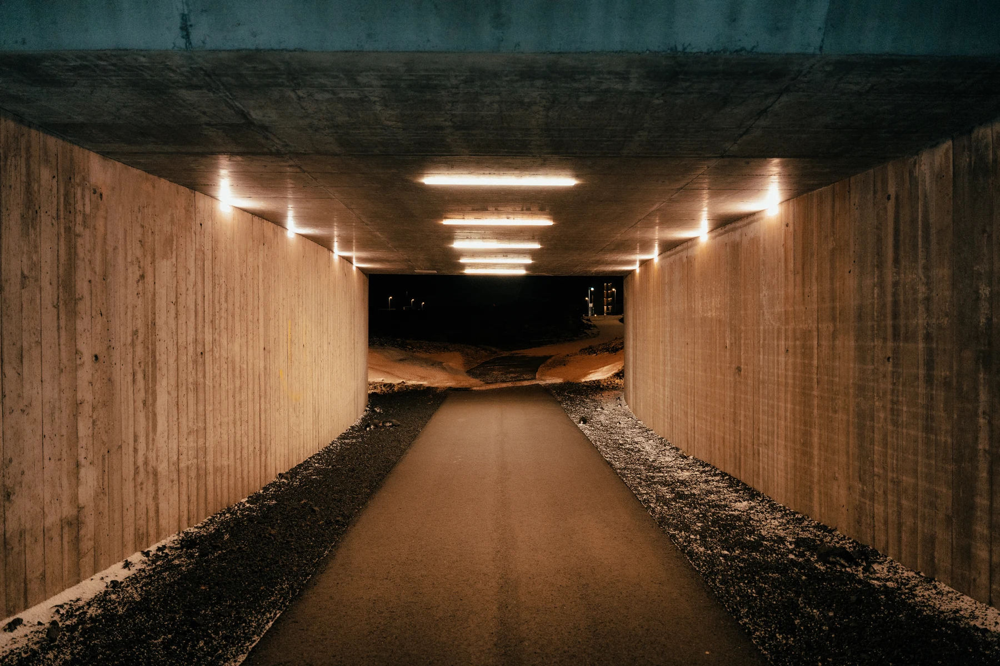
Quelques lumières restent allumées. Éclairages automatiques, ou gens qui ont décidé de continuer leur vie ici malgré tout ? Je ne le saurai pas. Je me surprends à regarder derrière moi. Je photographie vite, sans m’attarder devant la même maison.
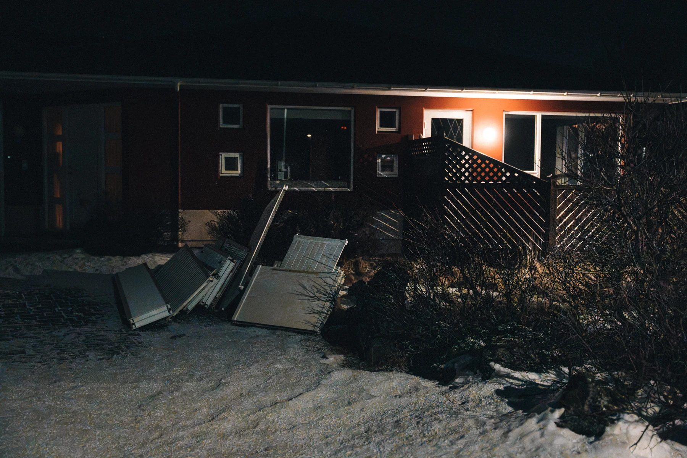
Je reste
à distance.
Par respect pour ceux qui avaient vécu là et ceux qui y vivent peut-être encore. Mais ce n’est pas tout. J’ai peur, aussi, sans savoir de quoi. De la terre qui peut s’ouvrir ? D’une fenêtre où quelqu’un se tiendrait ?
Pendant une seconde, mon flash rend le jour à une façade. Puis la nuit revient.
Au bout d’une heure, peut-être deux, je fais demi-tour. Au loin, je crois distinguer des ombres et des voix, mais le vent est si fort que je ne sais pas si je les invente. Je suis touché par la beauté étrange de cette nuit. Et triste, en pensant à ceux qui ont dû quitter leur maison.
Pour moi, c’est le début du voyage.
Pour d’autres, c’était chez eux.
Grindavík, mars 2026.
{kind=link}
{kind=link}
{kind=link}
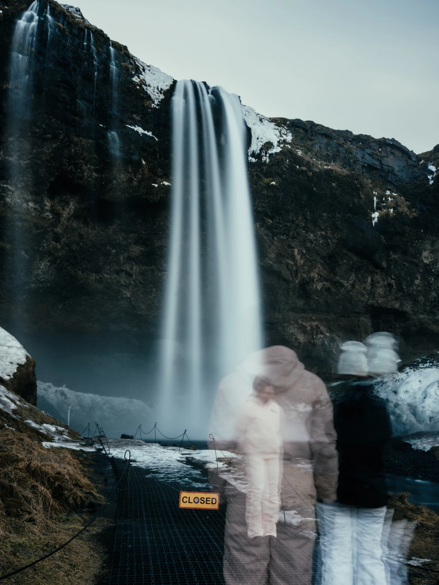
{kind=link}
{kind=link}
{kind=link}
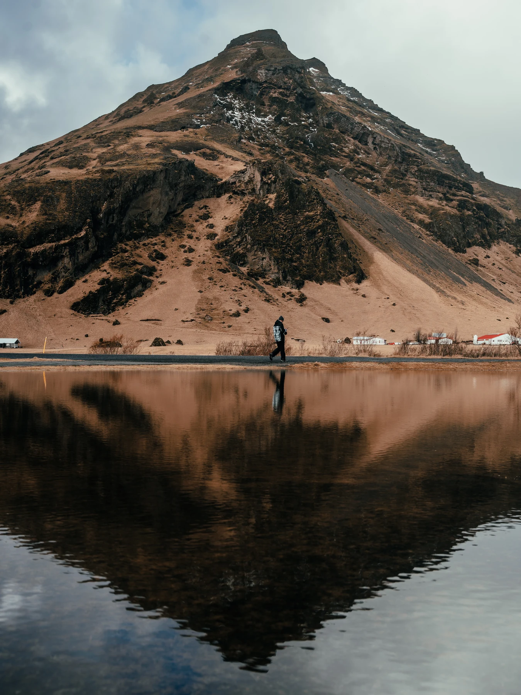
{kind=link}
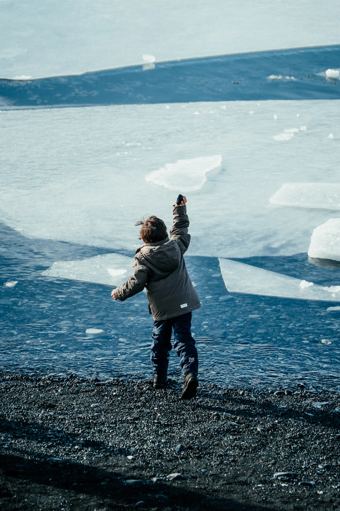
{kind=link}
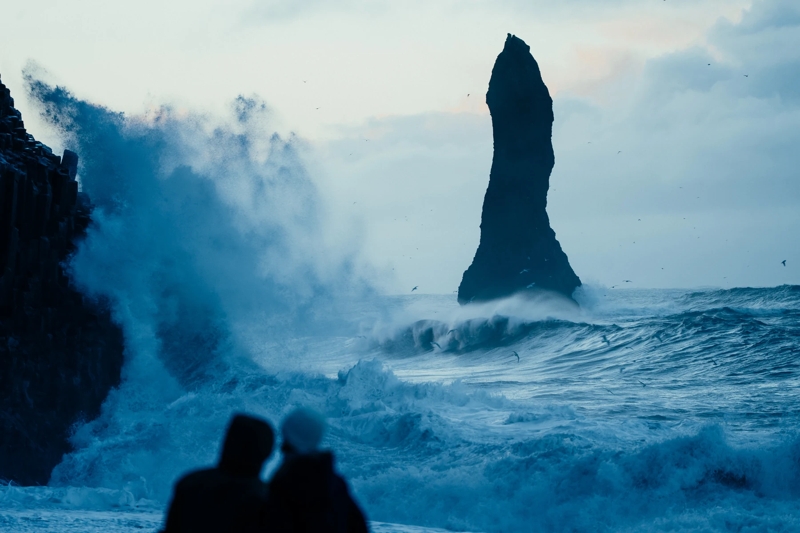
{kind=link}
Un peu plus près.
Au bout de la roche, deux silhouettes. Il suffisait de leur présence pour que la falaise paraisse immense, presque irréelle.
Je les ai photographiés à une vingtaine de minutes d’intervalle. Un téléphone levé pour un selfie, puis une étreinte. Des gestes minuscules devant les vagues et les oiseaux. Ce que j’étais venu chercher prenait forme devant moi, dans le cadre.
{kind=link}
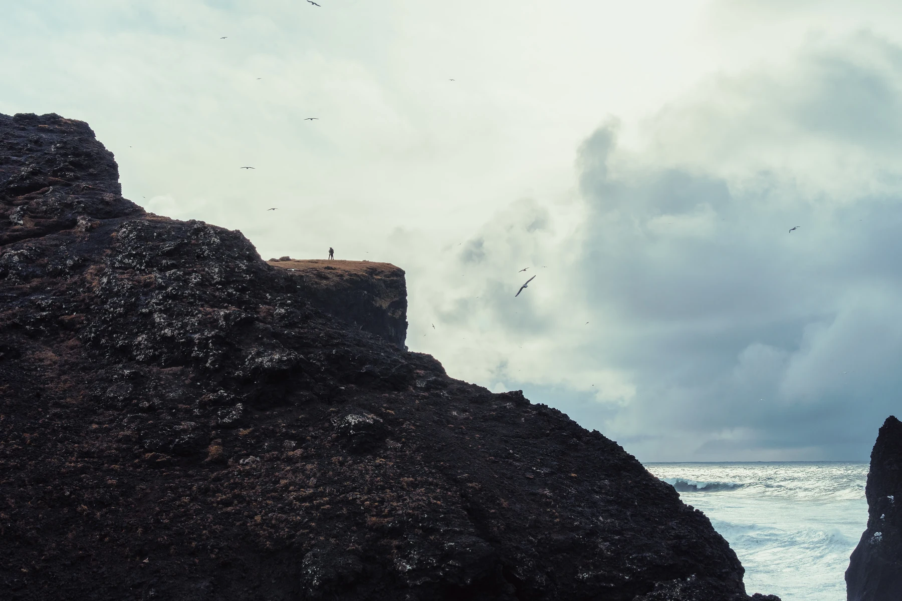
Mais en m’approchant de la falaise, j’ai découvert une longue corde et un panneau. Je n’en ai pas gardé les mots exacts : la roche se craquelait et le passage des visiteurs contribuait à sa dégradation. Il fallait rester en retrait.
Quand le couple est revenu, je les ai vus passer sous la corde.
Le paysage, lui, n’avait pas changé. Mais depuis que j’avais lu le panneau, je ne voyais plus mes photographies de la même manière. Ces silhouettes qui donnaient toute sa mesure à la falaise se tenaient à un endroit qu’il fallait laisser tranquille. Et j’avais fait de leur présence une part de sa beauté.
Ça m’a agacé de les voir revenir de l’autre côté.
Au fond, je comprenais pourtant l’envie. Il n’y avait personne ou presque. Quelques pas de plus, les vagues énormes, le vent de face. Être au bout de cette avancée de roche. Il y avait aussi le vide, juste en dessous.
Écouter le lieu
Je suis resté derrière la corde.
Mais je garde aussi ce souvenir-là : il m’a suffi de voir deux personnes de l’autre côté pour envisager de les rejoindre.
Une fois rentré.
Depuis mon retour, j’ai beaucoup moins photographié. Comme si j’avais trouvé l’endroit où faire des images et que le reste était devenu moins intéressant.
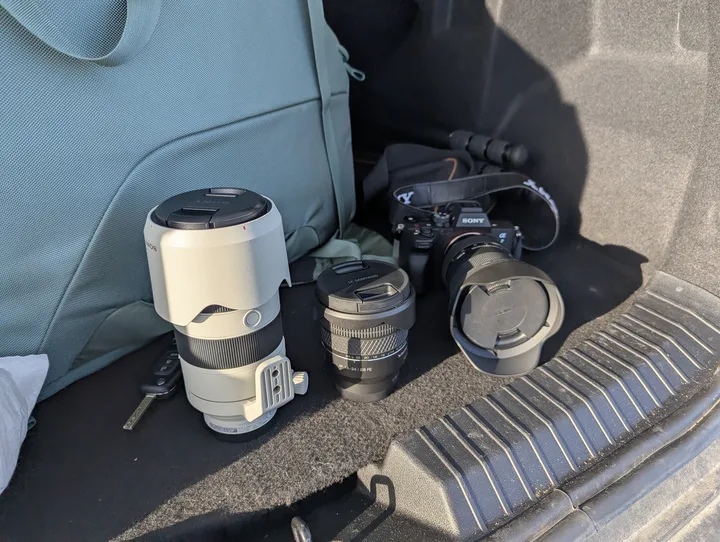
Je sais bien que ce n’est pas le cas. Mais comment retrouver l’envie de photographier des choses plus simples, plus proches ?